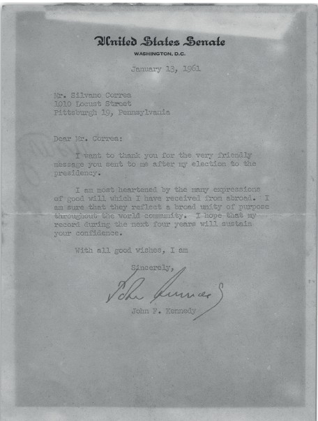

"Soñar por soñar es locura, es fantasía. Soñar para plasmar en obras grandes y bellas esos sueños, esto es sabiduría, es creación, es realidad."
Los cientos de cartas reproducidas en estos libros, publicadas en periódicos y revistas durante más de seis décadas, representan la formación y los pensamientos de un idealista. Son reflejos de una vida intensa, variada y siempre guiada por el estudio, la curiosidad y la exploración de nuevos caminos.
Destacado

Carta del Presidente John F. Kennedy
United States Senate, Washington, D.C.
En enero de 1961, el entonces presidente electo John F. Kennedy envió esta carta personal a Silvano Correa, agradeciéndole el mensaje de felicitación por su elección a la presidencia de los Estados Unidos.
Dear Mr. Correa:
I want to thank you for the very friendly message you sent to me after my election to the presidency.
I am most heartened by the many expressions of good will which I have received from abroad. I am sure that they reflect a broad unity of purpose throughout the world community. I hope that my record during the next four years will sustain your confidence.
With all good wishes, I am
Sincerely, John F. Kennedy
Estimado Sr. Correa:
Quiero agradecerle el muy amable mensaje que me envió después de mi elección a la presidencia.
Estoy muy alentado por las muchas expresiones de buena voluntad que he recibido del exterior. Estoy seguro de que reflejan una amplia unidad de propósito en toda la comunidad mundial. Espero que mi desempeño durante los próximos cuatro años mantenga su confianza.
El primer volumen reúne cincuenta años de cartas publicadas en diversos periódicos y revistas, incluyendo O Estado de S. Paulo, Time Magazine y Pittsburgh Press. Un testimonio de una vida dedicada al pensamiento crítico y la participación ciudadana.
El segundo volumen continúa el viaje con más de 350 cartas seleccionadas publicadas principalmente en el Foro de Lectores del periódico O Estado de S. Paulo. Una continuación del compromiso con el debate público y la reflexión sobre los rumbos de Brasil.
Silvano Correa nació en São Paulo en febrero de 1939. Se graduó en Economía y Matemáticas en la Universidad Duquesne (Pittsburgh, EE.UU.) en 1962, viviendo y estudiando en Estados Unidos durante diez años, desarrollando una visión crítica brasileña sobre dos culturas.
Con una carrera en empresas multinacionales y emprendimiento, fundó Micro-Total Sistemas en 1980. Cinturón negro en Aikido y estudioso del Espiritismo Kardecista, dedica su vida al estudio, la reflexión y la participación activa en la sociedad a través de sus cartas.